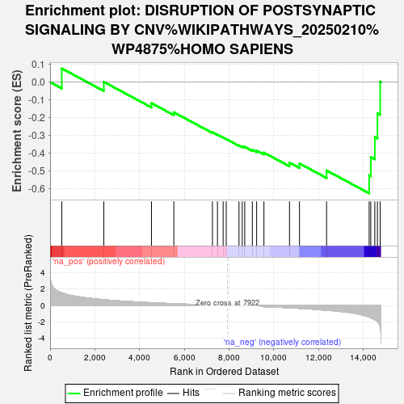

| | | Dataset | ag_ranks |
| Phenotype | NoPhenotypeAvailable |
| Upregulated in class | na_neg |
| GeneSet | DISRUPTION OF POSTSYNAPTIC SIGNALING BY CNV%WIKIPATHWAYS_20250210%WP4875%HOMO SAPIENS |
| Enrichment Score (ES) | -0.6275659 |
| Normalized Enrichment Score (NES) | -1.8681163 |
| Nominal p-value | 0.0025252525 |
| FDR q-value | 0.12377831 |
| FWER p-Value | 0.894 |
Table: GSEA Results Summary

Fig 1: Enrichment plot: DISRUPTION OF POSTSYNAPTIC SIGNALING BY CNV%WIKIPATHWAYS_20250210%WP4875%HOMO SAPIENS
Profile of the Running ES Score & Positions of GeneSet Members on the Rank Ordered List
Fig 2: DISRUPTION OF POSTSYNAPTIC SIGNALING BY CNV%WIKIPATHWAYS_20250210%WP4875%HOMO SAPIENS: Random ES distribution
Gene set null distribution of ES for DISRUPTION OF POSTSYNAPTIC SIGNALING BY CNV%WIKIPATHWAYS_20250210%WP4875%HOMO SAPIENS